Шаг 4: собираем "неправильный" белый крест на последнем слое.
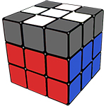
F R U R' U' F' - 1, 2 или 3 раза.
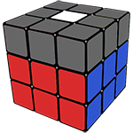
Если обратить внимание на крест вверху кубика, то белые наклейки в этом кресте образуют одну из 4-х ситуаций.
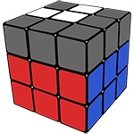
Наша цель - собрать "белый крест". Переход от предыдущей ситуации к следующей делается ОДИНАКОВОЙ формулой. F R U R' U' F'.
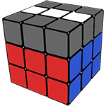
Шаг 5: делаем "правильный" белый крест.
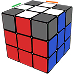
Вращаем верхний слой, чтобы какие-либо ДВА ребра совпали по цветам с центрами из среднего слоя. Может получиться одна из двух ситуаций.
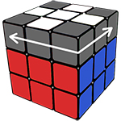
На свои места становятся два противолежащих ребра (у нас бело-синее и бело-зеленое), два остальных нужно поменять местами.
R U R' U R U2 R'
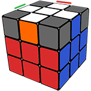
Два собраных ребра, стоят под углом* (у нас бело-синее и бело-оранжевое), два остальных нужно поменять местами комбинацией, при этом кубик держим, чтобы угол* смотрел от вас и вправо.
R U R' U R U2 R' U
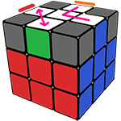
Шаг 6: расставляем углы верхнего слоя по своим местам.
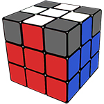
U R U' L' U R' U' L
Сделайте эту комбинацию, и один из кубиков обязательно станет на свое место.
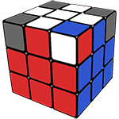
Вариант 1. Три несобранные ребра перемещаются против часовой стрелки и становятся на свои места. Собранным углом держим к себе и справа, как на рисунке.
U R U' L' U R' U' L
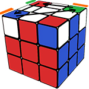
Вариант 2. Три несобранные ребра перемещаются по часовой стрелке и становятся на свои места. Собранным углом держим к себе и слева, как на рисунке.
U' L' U R U' L U R'
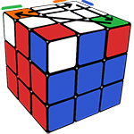
Шаг 7. Разворачиваем углы правильными цветами.
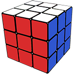
R' D' R D
Начнем с Красно-Сине-Белого. Держим кубик так, чтобы этот угол смотрел на вас и был справа. Делаем "четверку" 2 или 4 раза, пока угол не развернется.
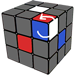
U
Красно-Сине-Белый развернулся. Но кубик "разрушился" - не паникуйте, так и должно быть. Поверните верх - теперь перед вами следующий угол. Внимание!!! Сам кубик все время держим красным центром к себе, белым - вверх.
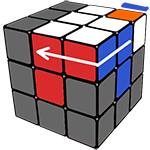
R' D' R D
Перед вами следующий Бело-Сине-Оранжевый угол. Опять разворачиваем его "четверкой". Если так получилось, что следующий угол уже правильно собран, тогда просто поверните верх ЕЩЕ РАЗ и собирайте следующий угол.

Когда вы развернете все 4 угла правильными цветами, произойдет маленькое чудо - остальные элементы кубика станут на свои места!